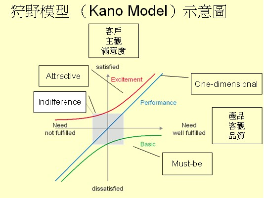
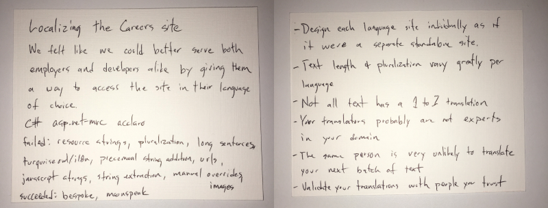
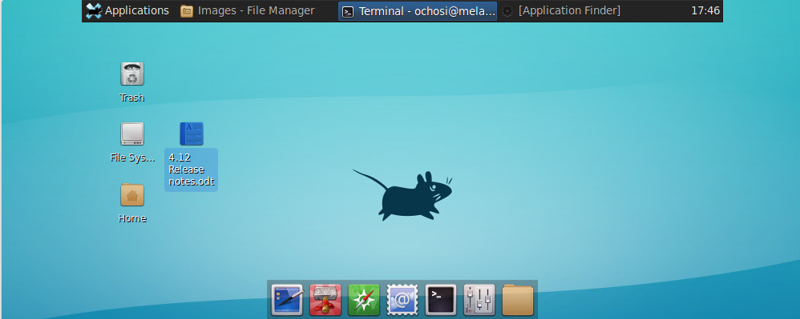
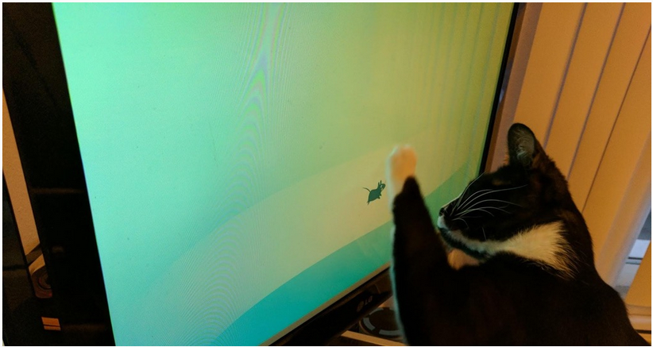

這是我閱讀 湾区日报 裡面每天提供五則訊息的筆記，紀錄個人閱讀心得等資訊。
本期文章位址: https://wanqu.co/issues/902?s=old-nav
The Kano Analysis
將 Kano Model 應用在設計互聯網產品上，對一批用戶進行簡單的測試：加入這個功能，你的滿意度如何？如果不加的話，你滿意度又如何？收集這倆問題的所有回答、彙總起來就能決定某個功能是否值得花時間去做了。
五類產品功能：1，Desired Features（越多越好，如磁盤容量）；2，Required Features（必須有，但差不多就行了，如輪子能轉就行）；3，Delightful Features（給用戶驚喜，若你不做，他們也不會失落）；4，Indifferent Features（有和沒有都無所謂）；5，Anti-features（加了後，用戶會瘋掉的）。應花力氣做 1 和 2，有額外時間才做 3，避免做 4 和 5。
狩野模型（Kano Model） 一般也稱為二維品質模型，所謂二維（Two-dimension）即是包括兩個維度，其一為從顧客觀點的滿意程度，屬於客戶主觀感受，另一為從產品品質觀點的提供，屬於客觀的產品機能或功能。狩野模型示意如下圖所示:

(以上引用自 產業策略評析：狩野模型（Kano Model）與魅力品質創造 一文)
剩下的我看不懂 :S，所以只好引用 湾区日报 的結論:
五類產品功能：
- Desired Features（越多越好，如磁盤容量）
- Required Features（必須有，但差不多就行了，如輪子能轉就行）
- Delightful Features（給用戶驚喜，若你不做，他們也不會失落）
- Indifferent Features（有和沒有都無所謂）
- Anti-features（加了後，用戶會瘋掉的）
應花力氣做 1 和 2，有額外時間才做 3，避免做 4 和 5。
面試的時候如何介紹你自己
不只是面試，在很多社交場合都需要介紹自己，介紹自己做過的事，要會講故事、讓人有興趣聽下去。平時要準備一些小段的、不同角度的自我介紹，要用的時候就像調 API 一樣方便：）
名人在電視上接受採訪，好像都能即興演講、侃侃而談；都是平時有準備、有練習、不斷 A/B testing、不斷迭代的，最後總會在合適的時候呈現出合適的版本的說辭。
一言以蔽之: 隨時做好說話準備 。
面試是一個壓力很大的過程，其壓力可能大到讓你講話都吱吱嗚嗚，思考不流暢。
對於做好說話準備，作者提供一個需要準備的列表:
- 你做了什麼產品 (What have you built?)
- 你工作上遇到最困難的狀況是什麼 (What is the hardest technical problem you have run into?)
- 你怎解決他 (How did you solve it?)
這個列表上的對談，可以幫助面試者了解你的狀況。
那應該如何準備呢? 作者建議用一系列的卡片 (notecards) ，上面列出你正在進行/管理的專案的特色以及目標，如下:

最後，因為這是 Stack Overflow Blog 的文章，所以文末也推薦了去 Stack Overflow Jobs 去看看有沒有職缺。
你不是你做的產品的用戶
公司創始人或早期員工往往都（號稱）是自己做的產品的忠實用戶，這有個問題：你就會按自己的思維習慣設計產品，亂加各種極其小眾的功能；畢竟世界上大部分人是跟你們很不一樣的。
一個產品的整個生命裡，非用戶數總是遠遠多於已有用戶數；在取悅少數死忠用戶與爭取多數新用戶之間，應優先考慮後者。
"Your customer focus should always be on new or potential users, not early users. Early users will bias experiments, prompt you to build more and more niche features, and stunt growth."
新創(startup)在一開始會成功的原因，大致上可以區分為兩種:
- 具有獨特的特色(unique insight) 或是解決了自己或是贊助者(founder)的某種問題(pain point)，並假設這問題其他人也會有。
- 傾聽用戶，並讓他們理解你所提供的價值(make sure they understand and appreciate the value you're providing)
產品的開發過程中，早期使用者會願意幫忙找到一些產品的缺陷(flaws)，並讓這項產品在他們手中可以良好了運作，但最終，當他們變成死忠用戶(power users)的時候，他們提交的回饋常常都是怎樣讓這個產品可以更好的運作在 他們自己 身上。
對於一項產品，應該要更加著重在新的用戶上面，雖然死忠用戶(power users)提供的回饋可能會有非常好的特性，但是相對的也會讓你的產品對新用戶而言更加的複雜。
延伸閱讀：
Google’s real Kubernetes magic is all about community, not code
作為開源項目，Kubernetes 是非常成功的，Google 懂得放手讓公司外的人貢獻代碼。Google 員工 commit 代碼的比例穩步下降，這是好事。
其實 Google 近幾年開源蠻多程式碼的，不過有一種說法是: 開源給其他人維護，這樣 Google 就可以少花點人力在上面 :)
Kubernetes 是 Google 開源的一套叢集管理系統，其目的是讓使用者透過 Kubernetes 叢集來進行雲端容器叢集的管理，而無需使用者進行複雜的設定工作 (參考資料)。
而這篇文章講到了 Kubernetes 已經在 Google 內部使用了 15 年之久，和他的進爭對手 Apache Mesos 相比， Kubernetes 有 5 倍大的社群，高達 1,350 個貢獻者，並且有 1,500 個相關工作。
文章後面我就沒啥興趣了，有興趣自己去看，對我而言重要的應該是這個: kubernetes/community: Kubernetes community content
本篇提及的延伸閱讀:
這可能是本年度最有趣的 bug 了
Xfce 是 Linux 上輕量級的桌面環境，GNOME 與 KDE 替代品。不止一個用戶報告了個「bug」：Xfce 的默認桌面的壁紙損壞顯示器屏幕！因為默認的壁紙是老鼠，家裡的貓看了就會去抓顯示器屏幕，把屏幕刮花了！
bug 的修復辦法：把壁紙換成狗。。。但家裡的狗會不會看到了也會來打招呼、舔屏、打架？你看，程序員平時的工作多麼不容易，修復一個 bug，同時引入另一個 bug，總是有活幹。
這個 bug :)
Xfce 預設的桌面是長這樣的，中間有一隻老鼠

其實這個桌布用了很久很久了，但是最近卻有人回報說，自己家的貓看到這個桌面會開始對螢幕抓啊抓啊抓，都把螢幕抓壞了:S。因此這個用戶在 bugzilla 上面開了這個 bug: 12117 – The default desktop startup screen causes damage to monitor!
不過如果進去看這個 bug，會發現到裡面的回應也很有趣:
Can't reproduce this bug, my cat is absolutely indifferent about it. What monitor do you use? Have you tried reporting the bug upstream at the cat vendor?
然後還有人在 reddit 上面貼了這篇: My cat was fooled by XFCE：linux ，這隻貓好可愛啊 XD

在我寫這篇文章的時候，BUG #12117 還沒被結案，開發者應該也很傻眼吧，其實只要換張桌布就好了啊 :)